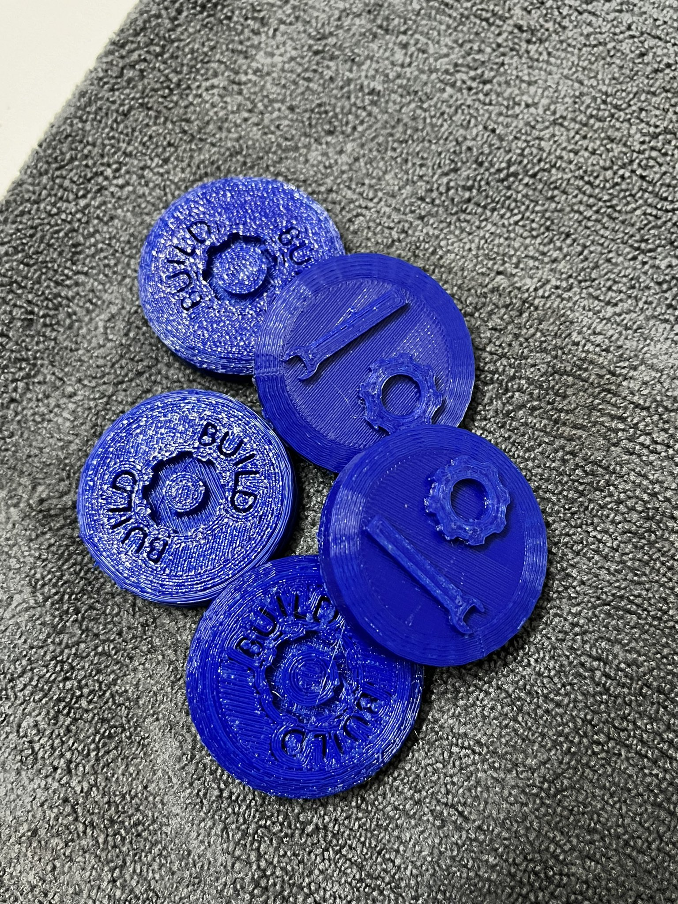
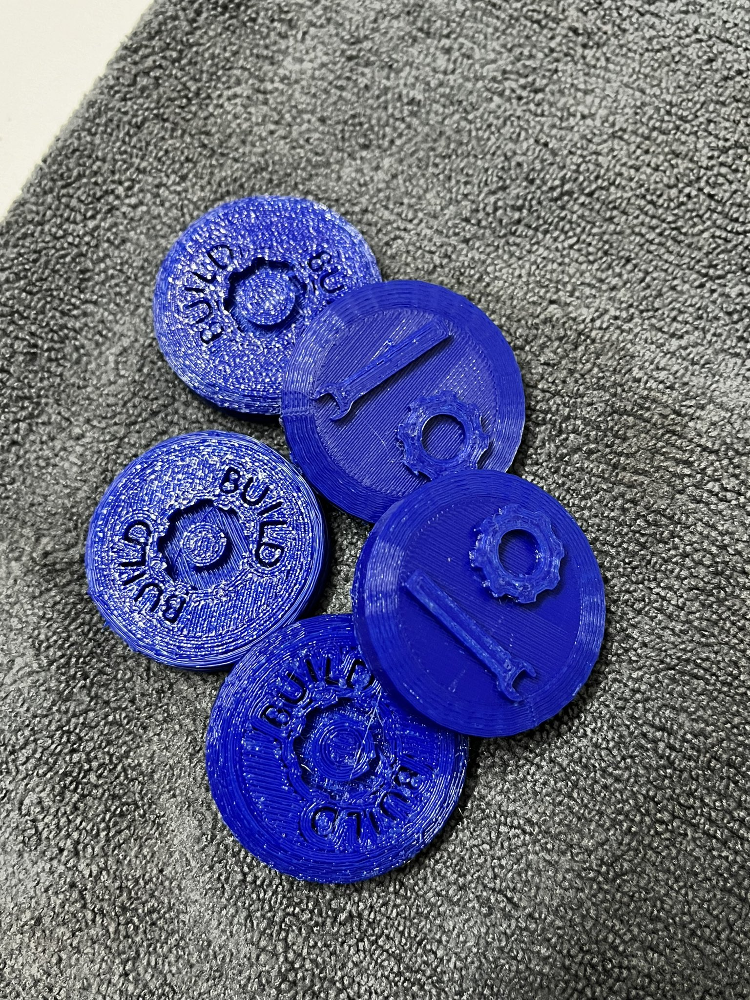

First Makercoin
I bought my first 3D printer!! When you get a 3D printer, the first thing you want to do is print a your own coin.
Its a way to learn 3D modeling and printing.
STL File: Link to drive
I bought my first 3D printer!! When you get a 3D printer, the first thing you want to do is print a your own coin.
Its a way to learn 3D modeling and printing.
STL File: Link to drive
